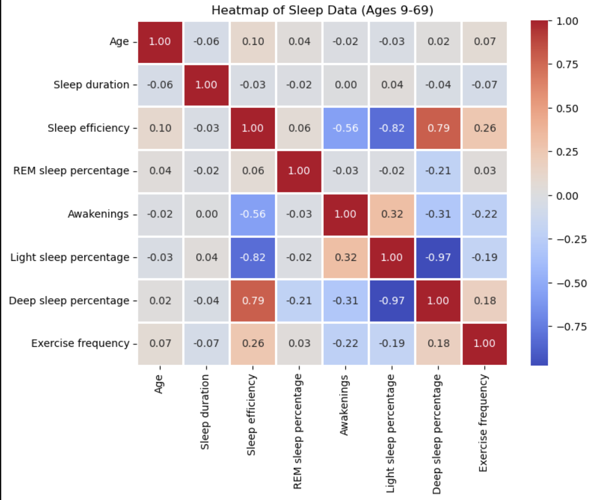

The Effect of Physical Activity on Sleep Quality
Analyzed data from 452 individuals ages ranging from 9-69 to explore whether exercise frequency affects sleep quality. Found that working out more often leads to better sleep efficiency and deeper sleep, but surprisingly does not have much effect on REM sleep. Results suggest that regular physical activity is a meaningful contributor to overall sleep quality.
More details
Problem
Getting quality sleep is harder than it seems. With busy schedules, varying activity levels, and countless factors affecting rest, it can be difficult to know what actually makes a difference. Many people struggle with poor sleep without understanding the role that physical activity plays a challenge that affects energy, focus, and overall health across all age groups.
Approach
Sourced a sleep and exercise dataset from Kaggle containing 452 individuals ages ranging from 9–69. Features included sleep duration, sleep efficiency, REM sleep percentage, deep sleep percentage, light sleep percentage, number of awakenings, and exercise frequency. Used histograms to explore the distribution of each variable, scatter plots to compare exercise frequency against each sleep metric, and a correlation heatmap to identify which factors had the strongest relationship with one another.
Results & Impact
Analysis revealed that higher exercise frequency was associated with greater sleep efficiency and deeper sleep, while reducing the number of nightly awakenings. Light sleep percentage decreased as exercise frequency increased, suggesting a shift toward more quality sleep stages. REM sleep percentage remained largely unaffected by exercise frequency. Overall, the findings support that regular physical activity is a meaningful contributor to better sleep quality.